Erste Schritte mit dem Add-On für die elektronische Rechnungsstellung für Brasilien
Important
Dynamics 365 for Finance and Operations hat sich zu speziell entwickelten Anwendungen entwickelt, mit denen Sie bestimmte Geschäftsfunktionen verwalten können. Weitere Informationen zu diesen Änderungen finden Sie im Dynamics 365-Lizenzierungshandbuch.
Important
Das Add-On für die elektronische Rechnungsstellung für Brasilien unterstützt derzeit nicht alle Funktionen, die in der Integration von Steuerdokumenten, die in Microsoft Dynamics 365 Finance und Dynamics 365 Supply Chain Management integriert ist, verfügbar sind.
Dieses Thema enthält Informationen, die Ihnen den Einstieg in das Add-On für die elektronische Rechnungsstellung für Brasilien erleichtern. Es führt Sie durch die Konfigurationsschritte, die in Regulatory Configuration Services (RCS) sowie in Finance und Supply Chain Management länderabhängig sind. Außerdem werden Sie durch den Prozess der Übermittlung eines NF-e-Steuerdokuments (elektronisches Steuerdokumentmodell 55) über den Dienst geführt und es wird erläutert, wie die Verarbeitungsergebnisse und der Status der Steuerdokumente überprüft werden.
Voraussetzungen
Bevor Sie die Schritte in diesem Thema ausführen, müssen Sie die Schritte in Erste Schritte mit dem Add-On für die elektronische Rechnungsstellung ausführen.
RCS-Einstellungen
Während der RCS-Einrichtung führen Sie folgende Aufgaben aus:
- Importieren Sie die Funktion für die elektronische Rechnungsstellung für NF-e-Steuerdokumente.
- Überprüfen Sie die Dateiformate, die erforderlich sind, um NF-e-Steuerdokumente zur Autorisierung zu übermitteln.
- Überprüfen Sie die Dateiformate, die erforderlich sind, um die Stornierung eines genehmigten NF-e zu beantragen.
- Konfigurieren Sie das Ereignis, das erforderlich ist, um NF-e-Steuerdokumente zur Autorisierung zu übermitteln.
- Konfigurieren Sie das Ereignis, das erforderlich ist, um die Stornierung eines genehmigten NF-e zu beantragen.
- Weisen Sie die Funktion für die elektronische Rechnungsstellung einer Add-On-Umgebung für die elektronische Rechnungsstellung zu.
- Veröffentlichen Sie die Funktion für die elektronische Rechnungsstellung.
Note
„Die Funktion für die elektronische Rechnungsstellung“ ist der generische Name für die Ressource, die so konfiguriert und veröffentlicht ist, dass sie den Add-On-Server für die elektronische Rechnungsstellung verwendet. Das Einrichten der Funktion für die elektronische Rechnungsstellung umfasst unter anderem die Verwendung von Konfigurationsformaten der elektronischen Berichterstellung (EB) zum Erstellen konfigurierbarer Export- und Importdateien sowie die Verwendung von Aktionen und Aktionsabläufen, um die Erstellung konfigurierbarer Regeln zum Senden von Anforderungen, zum Importieren von Antworten und zum Analysieren des Inhalts der Antworten zu ermöglichen.
Importieren der Funktion für die elektronische Rechnungsstellung
Melden Sie sich bei Ihrem RCS-Konto an.
Wählen Sie im Arbeitsbereich Globalisierungsfunktionen im Abschnitt Funktionen die Kachel Elektronische Rechnungsstellung aus.
Wählen Sie auf der Seite Funktionen für die elektronische Rechnungsstellung die Option Importieren aus, um eine Funktion für die elektronische Rechnungsstellung für NF-e-Steuerdokumente aus dem globalen Repository zu importieren.
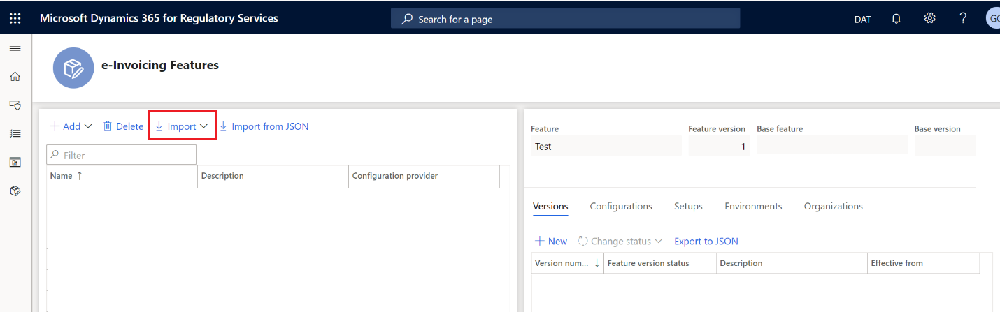
Wählen Sie die Funktion für NF-e-Steuerdokumente aus und wählen Sie dann Importieren aus.
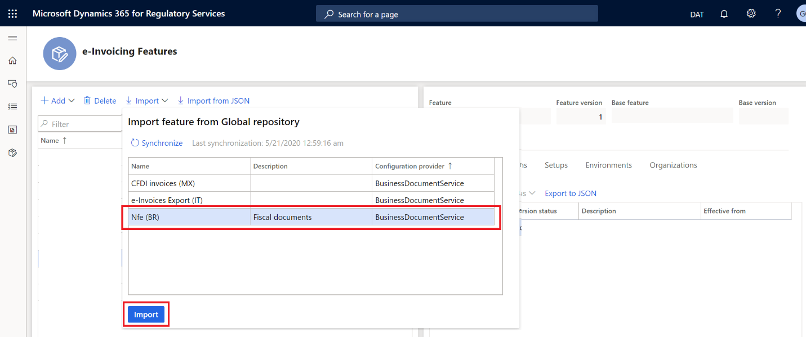
Erstellen Sie eine neue Version der Funktion für NF-e-Steuerdokumente
- Wählen Sie auf der Seite Funktionen für die elektronische Rechnungsstellung auf der Registerkarte Versionen die Option Neu aus.
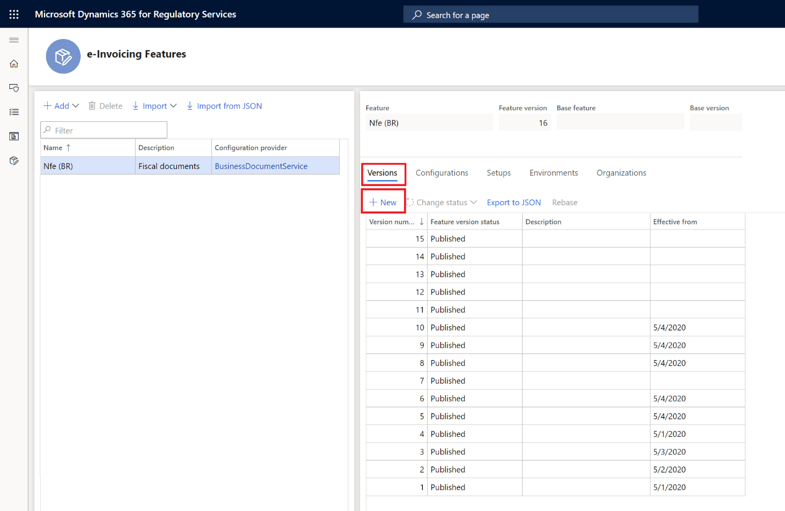
Aktualisieren der Konfigurationsversion
Wählen Sie auf der Seite Funktionen für die elektronische Rechnungsstellung auf der Registerkarte Konfigurationen entweder Hinzufügen oder Löschen aus, um die Konfigurationsversionen (EB-Dateiformatkonfigurationen) zu verwalten.
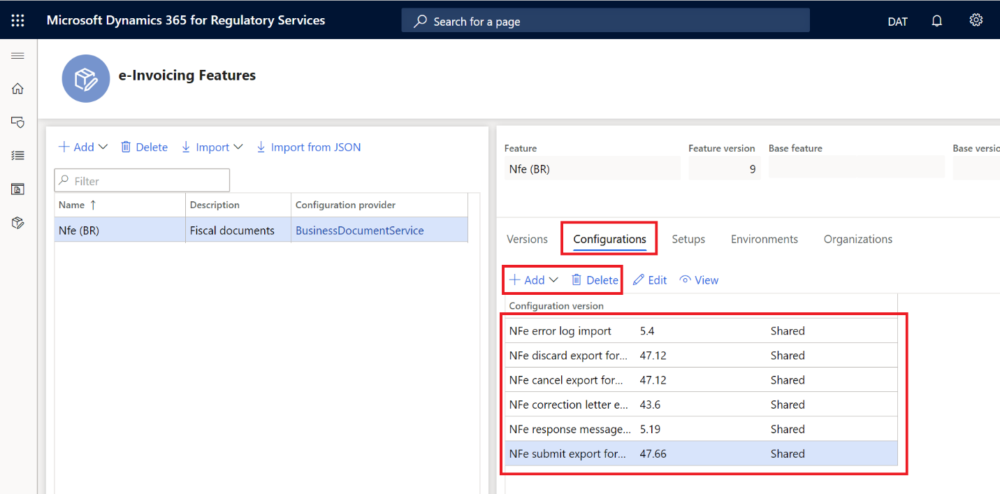
Wenn Sie eine neue Version der Funktion für NF-e-Steuerdokumente erstellen, werden alle Konfigurationsversionen (EB-Dateiformate) von der neuesten Version geerbt.
Um das NF-e-Steuerdokument zur Autorisierung zu übermitteln, sind die folgenden Konfigurationsversionen erforderlich:
- Exportformat zur Übermittlung von NFe
- Import der NFe-Antwortnachricht
- Import des NFe-Fehlerprotokolls
Um die NF-e-Stornierung zu übermitteln, ist die folgende Konfigurationsversion erforderlich:
- Exportformat zur Stornierung von NFe
Wählen Sie in der Liste eine Konfigurationsversion aus und wählen Sie dann Bearbeiten oder Anzeigen aus, um die Seite Formatdesigner zu öffnen, auf der Sie die Konfiguration bearbeiten oder anzeigen können.
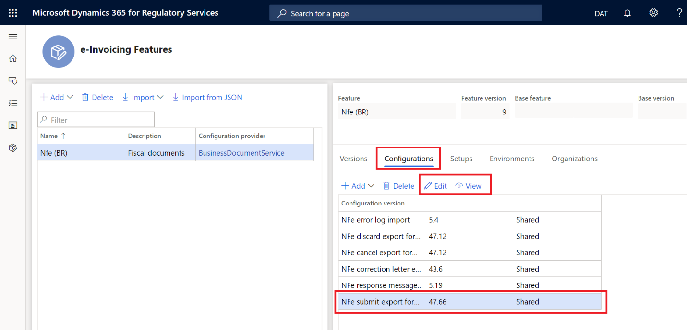
Verwenden Sie die Seite Formatdesigner, um die EB-Formatkonfigurationen für Dateien zu bearbeiten oder anzuzeigen. Weitere Informationen finden Sie unter Erstellen elektronischer Berichterstellungskonfigurationen.
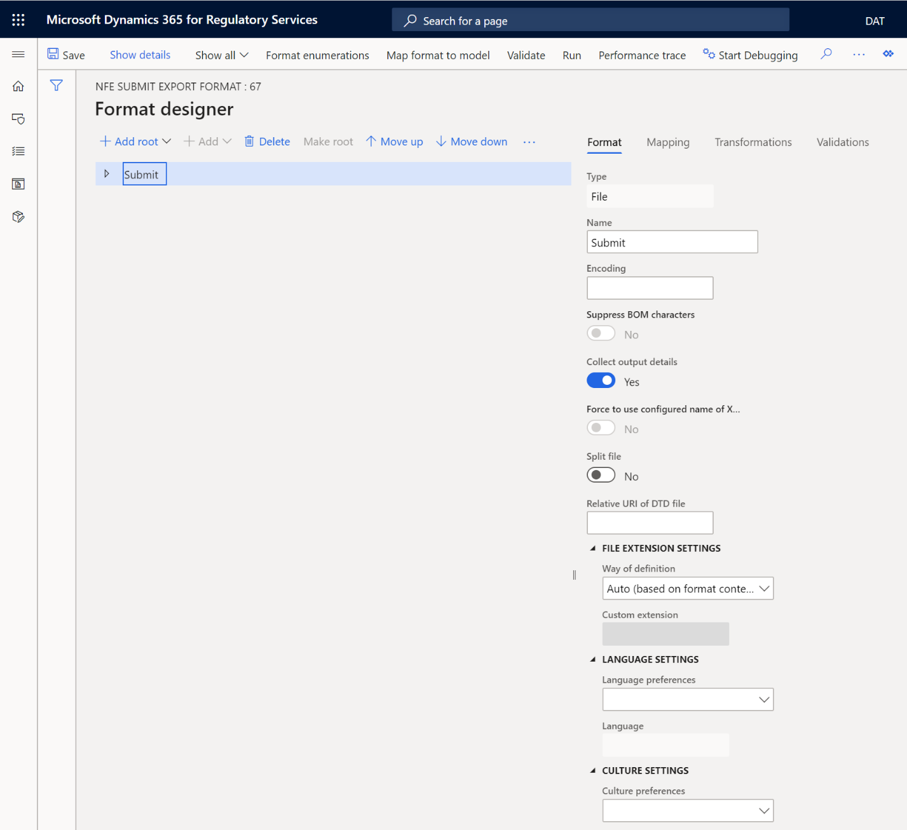
Verwalten der Einrichtungen der Funktion für die elektronische Rechnungsstellung
- Wählen Sie auf der Seite Funktionen für die elektronische Rechnungsstellung auf der Registerkarte Einrichtungen entweder Hinzufügen oder Löschen aus, um die Einrichtungen (d. h. NF-e-Ereignisse) der Funktion für die elektronische Rechnungsstellung zu verwalten.
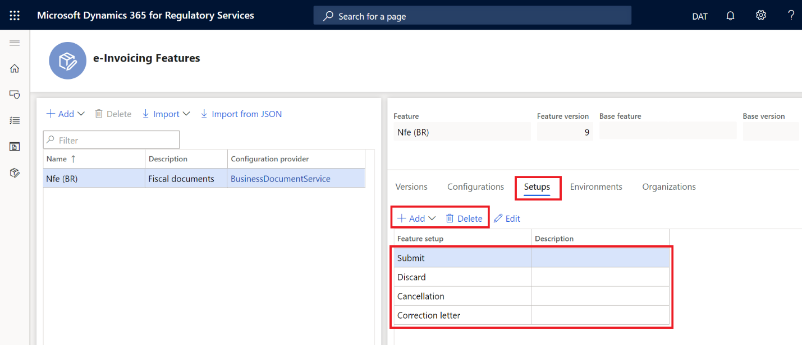
Wenn Sie eine neue Version der Funktion für NF-e-Steuerdokumente erstellen, die von einer anderen Funktion für die elektronische Rechnungsstellung abgeleitet ist, werden alle Funktionseinrichtungen (NF-e-Ereignisse) von der neuesten Version geerbt.
Um NF-e-Steuerdokumente zur Autorisierung zu übermitteln, ist die Funktionseinrichtung Übermitteln erforderlich.
Um die NF-e-Stornierung zu übermitteln, ist die Funktionseinrichtung Stornierung erforderlich.
Konfigurieren der Funktionseinrichtung „Übermitteln“
Wählen Sie auf der Seite Funktionen für die elektronische Rechnungsstellung auf der Registerkarte Einrichtungen in der Spalte Funktionseinrichtung die Option Übermitteln aus.
Wählen Sie Bearbeiten aus.
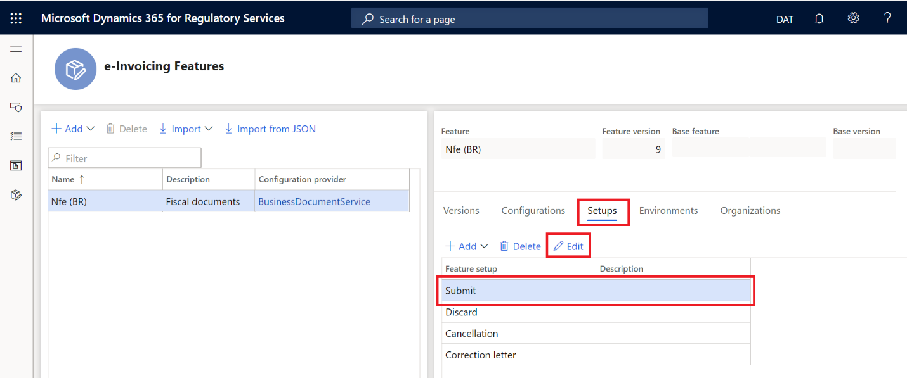
Wählen Sie auf der Seite Einrichtung der Funktionsversion die Registerkarte Aktionen aus, um die Liste der Aktionen zu verwalten.
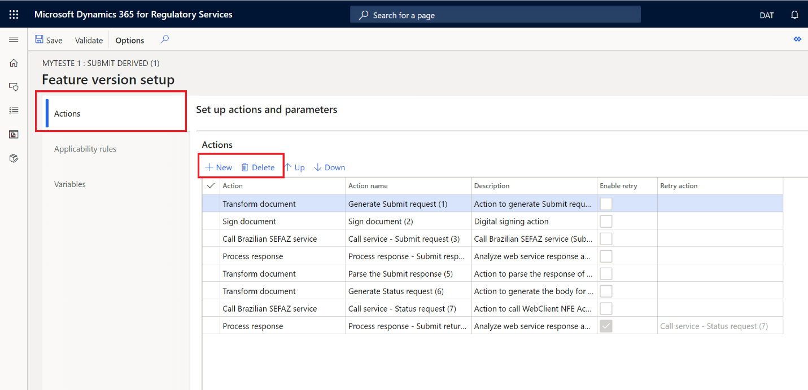
Überprüfen Sie die Aktionen, die erforderlich sind, um ein NF-e zur Autorisierung zu übermitteln.
Aktivitätskennung Aktivitätsname Aktivitätsbeschreibung 1 Umwandeln des Dokuments Erstellen Sie die NF-e-XML-Datei zur Übermittlung. 2 Dokument signieren Wenden Sie das digitale Zertifikat auf die XML-Datei an. 3 Aufrufen des brasilianischen SEFAZ-Dienstes Übermitteln Sie die signierte XML-Datei zur Autorisierung an die Webdienste. 4 Verarbeiten der Antwort Rufen Sie die Antwort des Webdienstes ab. 5 Umwandeln des Dokuments Analysieren Sie den Inhalt der Datei, die Sie als Antwort erhalten. 6 Umwandeln des Dokuments Erstellen Sie die XML-Datei, um den Status der Übermittlung abzufragen. 7 Aufrufen des brasilianischen SEFAZ-Dienstes Übermitteln Sie die XML-Datei, die den Übermittlungsstatus anfordert. 8 Verarbeiten der Antwort Rufen Sie die Antwort des Webdienstes ab.
Einrichten der URL für SEFAZ-Webdienste
- Wählen Sie auf der Seite Einrichtung der Funktionsversion auf der Registerkarte Aktionen auf dem Inforegister Aktionen die Option Aufrufen des brasilianischen SEFAZ-Dienstes (Aktions-ID 3) aus.
- Geben Sie auf dem Inforegister Parameter in das Feld Parameter der URL-Adresse die URL des SEFAZ-Webdienstes für die NF-e-Übermittlung ein.
- Wählen Sie auf dem Inforegister Aktionen die Option Aufrufen des brasilianischen SEFAZ-Dienstes aus (Aktions-ID 7).
- Geben Sie auf dem Inforegister Parameter in das Feld Parameter der URL-Adresse die URL des SEFAZ-Webdienstes für die NF-e-Übermittlung ein.
Konfigurieren der Funktionseinrichtung „Stornierung“
Wählen Sie auf der Seite Funktionen für die elektronische Rechnungsstellung auf der Registerkarte Einrichtungen in der Spalte Funktionseinrichtung die Option Stornierung aus.
Wählen Sie Bearbeiten aus.
Wählen Sie auf der Seite Einrichtung der Funktionsversion die Registerkarte Aktionen aus, um die Liste der Aktionen zu verwalten.
Überprüfen Sie die Aktionen, die erforderlich sind, um die Stornierung eines genehmigten NF-e zu beantragen.
Aktivitätskennung Aktivitätsname Aktivitätsbeschreibung 1 Umwandeln des Dokuments Erstellen Sie für die NF-e-Stornierung die XML-Datei zur Übermittlung. 2 Dokument signieren Wenden Sie das digitale Zertifikat auf die XML-Datei an. 3 Aufrufen des brasilianischen SEFAZ-Dienstes Übermitteln Sie die signierte XML-Datei zur Stornierung an die Webdienste. 4 Verarbeiten der Antwort Rufen Sie die Antwort des Webdienstes ab.
Einrichten der URL für SEFAZ-Webdienste
- Wählen Sie auf der Seite Einrichtung der Funktionsversion auf der Registerkarte Aktionen auf dem Inforegister Aktionen die Option Aufrufen des brasilianischen SEFAZ-Dienstes (Aktions-ID 3) aus.
- Geben Sie auf dem Inforegister Parameter in das Feld Parameter der URL-Adresse die URL des SEFAZ-Webdienstes für die Stornierung einer genehmigten NF-e ein.
Bereitstellen einer Umgebung für die elektronische Rechnungsstellung und Zuweisen einer Entwurfsversion
- Wählen Sie auf der Seite Funktionen für die elektronische Rechnungsstellung auf der Registerkarte Umgebungen die Option Aktivieren aus.
- Wählen Sie im Feld Umgebung die Umgebung aus.
- Wählen Sie im Feld Gültig ab das Datum aus, an dem die Umgebung wirksam werden soll.
- Wählen Sie Aktivieren aus.
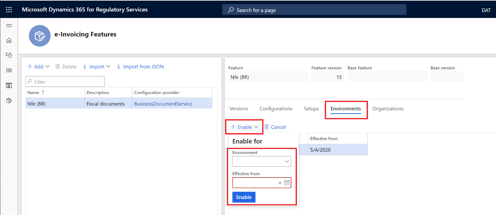
Ändern Sie den Status in „Abgeschlossen“.
- Wählen Sie auf der Seite Funktionen für die elektronische Rechnungsstellung auf der Registerkarte Versionen die Version der Funktion für die elektronische Rechnungsstellung mit dem Status Entwurf aus.
- Wählen Sie Status ändern >Abschließen aus.
Ändern Sie den Status in „Veröffentlichen“.
- Wählen Sie auf der Seite Funktionen für die elektronische Rechnungsstellung auf der Registerkarte Versionen die Version der Funktion für die elektronische Rechnungsstellung mit dem Status Abgeschlossen aus.
- Wählen Sie Status ändern > Veröffentlichen aus.
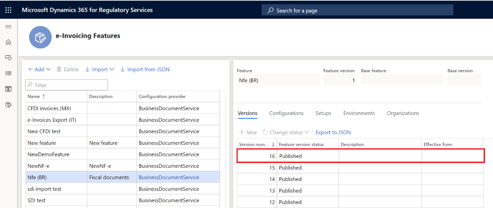
Einrichten der Add-On-Integration für die elektronische Rechnungsstellung in Finance oder Supply Chain Management
Während dem Einrichten führen Sie folgende Aufgaben aus:
- Aktivieren Sie die NF-e-Funktion für Brasilien.
- Importieren Sie das spezifische EB-Datenmodell, die Datenmodellzuordnung und die Formate, die für NF-e-Steuerdokumente erforderlich sind.
- Importieren Sie die BR-Konfiguration und richten Sie die Antworttypen ein, die erforderlich sind, um den Status des Steuerdokuments zu aktualisieren, nachdem der Übermittlungsprozess zurückgegeben wurde.
Aktivieren der NF-e-Funktion für Brasilien.
- Navigieren Sie zu Organisationsverwaltung > Einrichtung > Parameter elektronischer Dokumente.
- Aktivieren Sie auf der Registerkarte Funktionen das Kontrollkästchen Aktivieren in der Zeile für Funktionsreferenz BR00053.
Importieren der für NF-e-Steuerdokumente erforderlichen EB-Datenmodellzuordnung
- Melden Sie sich bei Finance an.
- Wählen Sie im Arbeitsbereich Elektronische Berichterstellung im Abschnitt Konfigurationsanbieter die Kachel Microsoft aus. Stellen Sie sicher, dass dieser Konfigurationsanbieter auf Aktiv festgelegt ist. Weitere Informationen zum Festlegen eines Anbieters auf Aktiv finden Sie unter Erstellen von Konfigurationsanbietern und Markieren als aktiv.
- Wählen Sie Repositorys aus.
- Wählen Sie Globale Ressource > Öffnen aus.
- Importieren Sie die Konfigurationen Zuordnung von Steuerdokumenten.
Importieren der EB-Konfigurationen und Einrichten der Antworttypen für Steuerdokumente
- Wählen Sie im Arbeitsbereich Elektronische Berichterstellung im Abschnitt Konfigurationsanbieter die Kachel Microsoft aus.
- Wählen Sie Repositorys aus.
- Wählen Sie Globale Ressource > Öffnen aus.
- Importieren Sie Import des NFe-Fehlerprotokolls (BR), Importformat für NF-e-Antwortdaten (BR) und Import von NF-e-Antwortnachrichten (BR).
- Navigieren Sie zu Organisationsverwaltung > Einrichtung > Parameter elektronischer Dokumente.
- Wählen Sie auf der Registerkarte Elektronisches Dokument die Option Hinzufügen aus.
- Wählen Sie im Feld Tabellenname die Option Steuerdokumentkopf aus.
- Wählen Sie im Feld Dokumentkontext die Option Kontextmodell Debitorenrechnung – Steuerdokumentkontext.
- Wählen Sie Antworttypen aus.
- Wählen Sie Neu aus und wählen Sie anschließend im Feld Antworttyp die Option Antwort aus.
- Wählen Sie im Feld Übermittlungsstatus die Option Ausstehend aus.
- Wählen Sie im Feld Modellzuordnung die Option Importformat für Antwortnachrichten – Modellzuordnung aus Antwortnachricht aus.
- Wählen Sie Speichern aus.
- Wählen Sie Neu und anschließend im Feld Antworttyp die Option Antwortdaten aus.
- Wählen Sie im Feld Übermittlungsstatus die Option Ausstehend aus.
- Wählen Sie im Feld Modellzuordnung die Option Importformat für NFe-Antwortdaten – Import von Antwortdaten aus.
- Wählen Sie Speichern aus.
Verarbeitung der elektronischen Rechnung
Während der Verarbeitung in Finance führen Sie folgende Aufgaben aus:
- Übermitteln Sie ein Steuerdokument über das Add-On für die elektronische Rechnungsstellung.
- Zeigen Sie die Ausführungsprotokolle für die Übermittlung an und überprüfen Sie die Ergebnisse der Verarbeitung.
- Übermitteln Sie die Stornierung eines Steuerdokuments über das Add-On für die elektronische Rechnungsstellung.
Übermitteln von NF-e-Steuerdokumenten zur Autorisierung durch die SEFAZ
Nachdem Sie die Funktion Integration des konfigurierbaren Add-Ons für die elektronische Rechnungsstellung aktiviert haben, kann der alte Prozess zum Übermitteln von NF-e-Steuerdokumenten zur Autorisierung (Exportieren/Importieren des NF-e-Prozesses) nicht mehr verwendet werden. Er wird durch einen neuen Prozess mit dem Namen Elektronische Dokumente übermitteln ersetzt.
Note
Stellen Sie vor dem Fortfahren sicher, dass Sie über ein oder mehrere Kundensteuerdokumente Modell 55 verfügen, die von der Steuerbehörde des Kunden ausgestellt wurden. Die Richtung für diese Steuerdokumente muss auf Ausgehend festgelegt werden und der Status muss Erstellt lauten. Weitere Informationen finden Sie unter Steuerdokumente für Debitoren ausstellen (Brasilien).
- Navigieren Sie zu Organisationsverwaltung > Periodisch > Elektronische Dokumente > Elektronische Dokumente übermitteln.
- Legen Sie für die erste Übermittlung irgendeines Dokuments immer die Option Dokumente erneut übermitteln auf Nein fest. Wenn Sie ein Dokument erneut über den Service übermitteln müssen, legen Sie diese Option auf Ja fest.
- Wählen Sie auf dem Inforegister Einzuschließende Datensätze die Option Filtern aus, um das Dialogfeld Anfrage zu öffnen, in dem Sie eine Abfrage erstellen können, um Dokumente für die Übermittlung auszuwählen.
- Wählen Sie auf der Registerkarte Bereich die Option Hinzufügen aus.
- Wählen Sie im Feld Tabelle die Option Steuerdokumentkopf aus.
- Wählen Sie im Feld Abgeleitete Tabelle die Option Steuerdokumentkopf aus.
- Wählen Sie im Feld Feld die Option Nummer aus.
- Geben Sie in das Feld Kriterien die Nummer des Steuerdokuments ein, das übermittelt werden soll.
- Wählen Sie OK aus, um das Dialogfeld Anfrage zu schließen.
- Wählen Sie OK aus, um die ausgewählten Dokumente zu übermitteln.
Note
Bei Ihrem ersten Versuch, ein Dokument über den Service zu übermitteln, werden Sie aufgefordert, die Verbindung mit dem Add-On für die elektronische Rechnungsstellung zu bestätigen. Wählen Sie Hier klicken, um eine Verbindung mit dem Electronic Document Submission Service herzustellen aus.
Anzeigen aller Übermittlungsprotokolle
Nach dem Aktivieren der Funktion Integration des konfigurierbaren Add-Ons für die elektronische Rechnungsstellung ist eine neue Seite verfügbar, über die Sie den Übermittlungsprozess für das Dokument nachverfolgen können. Sie können diese Seite verwenden, um die Übermittlungsprotokolle für alle übermittelten Dokumente anzuzeigen.
- Navigieren Sie zu Organisationsverwaltung > Periodisch > Elektronische Dokumente > Übermittlungsprotokoll für elektronische Dokumente.
- Wählen Sie im Fenster Dokumenttyp die Option Steuerdokumentkopf aus, um eine Filterung nur nach Steuerdokumenten durchzuführen.
- Wählen Sie im Aktivitätsbereich die Option Anfragen > Übermittlungsdetails aus, um die Details der Ausführungsprotokolle für die Übermittlung anzuzeigen.
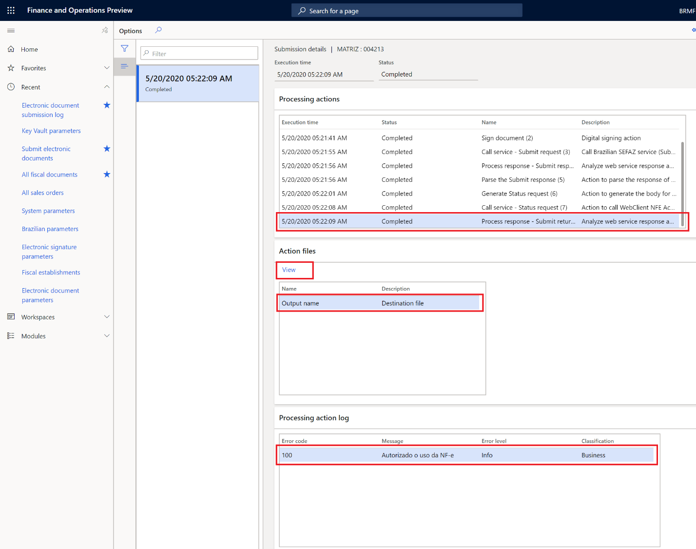
Note
Für NF-e-Steuerdokumente zeigt die Spalte Fehlercode den Rückgabecode an, der von den SEFAZ-Webdiensten zurückgegeben wurde.
Anzeigen von Übermittlungsprotokollen über die Steuerdokumentseite
Nach dem Aktivieren der Funktion Integration des konfigurierbaren Add-Ons für die elektronische Rechnungsstellung können Sie die Übermittlungsprotokolle auch über die Steuerdokumentseite anzeigen.
- Wechseln Sie zu Hauptbuch > Anfragen und Berichte > Steuerdokumente > Alle Steuerdokumente.
- Wählen Sie ein Steuerdokument aus, das zuvor über das Add-On für die elektronische Rechnungsstellung übermittelt wurde.
- Wählen Sie im Aktivitätsbereich auf der Registerkarte NF-e die Option Elektronisches Dokumentenprotokoll aus.
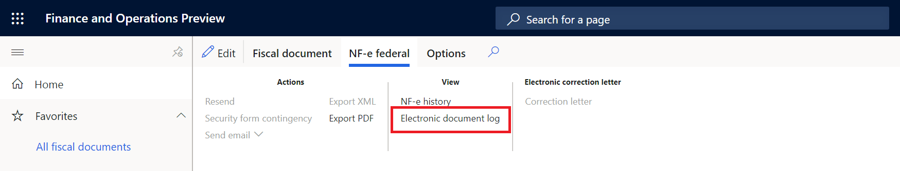
Übermitteln von genehmigten NF-e-Steuerdokumenten zur Stornierung durch die SEFAZ
Nachdem Sie die Funktion Integration des konfigurierbaren Add-Ons für die elektronische Rechnungsstellung aktiviert haben, kann der alte Prozess zum Stornieren von NF-e-Steuerdokumenten nicht mehr verwendet werden. Er wird durch einen neuen Stornierungsprozess ersetzt, der in die Seite Übermittlungsprotokoll für elektronische Dokumente eingebettet ist.
Note
Stellen Sie sicher, dass Sie die Stornierung des Steuerdokuments für Debitoren für ein genehmigtes NF-e-Steuerdokument ausgeführt haben. Weitere Informationen finden Sie unter Steuerdokumente für Debitoren stornieren (Brasilien).
- Navigieren Sie zu Organisationsverwaltung > Periodisch > Elektronische Dokumente > Übermittlungsprotokoll für elektronische Dokumente.
- Wählen Sie das Steuerdokument aus und wählen Sie dann Funktionen > Zugehörige Übermittlungen senden aus.
- Geben Sie eine Beschreibung für die zugehörige Übermittlung ein und wählen Sie dann OK aus.
Anzeigen von Übermittlungsprotokollen zu Stornierungen
Navigieren Sie zu Organisationsverwaltung > Periodisch > Elektronische Dokumente > Übermittlungsprotokoll für elektronische Dokumente.
Wählen Sie im Fenster Dokumenttyp die Option Steuerdokumentkopf aus, um eine Filterung nur nach Steuerdokumenten durchzuführen.
Wählen Sie das Steuerdokument aus und wählen Sie dann im Aktivitätsbereich Anfragen > Zugehörige Übermittlungen aus.
Zugehörige Übermittlungen sind Übermittlungen, die zu einer zuerst übermittelten Hauptübermittlung gehören. Beispielsweise ist die Übermittlung, die eine bestimmte NF-e autorisiert, die Hauptübermittlung. Die Übermittlung, die die Stornierung derselben NF-e bei der SEFAZ beantragt, ist eine zugehörige Übermittlung. Sie existiert nur, weil sie die Stornierung des Vorgangs anfordert, der durch eine andere Übermittlung ausgeführt wurde.
Die Seite Zugehörige Übermittlungen zeigt alle zugehörigen Übermittlungen und ihren Übermittlungsstatus für ein bestimmtes Steuerdokument an. In der folgenden Abbildung stellt die erste Zeile die Übermittlung dar, die die Genehmigung des Steuerdokuments beantragt hat. Die zweite Zeile stellt die Übermittlung dar, mit der dieses Steuerdokument storniert wurde.
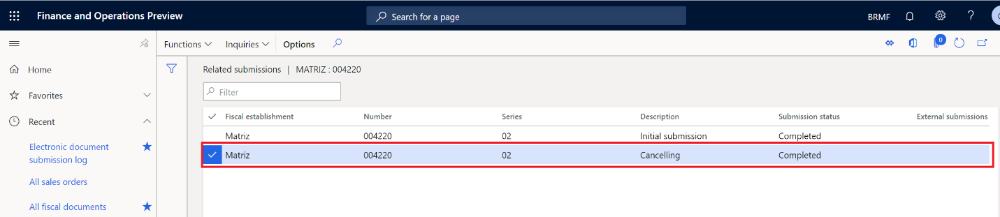
Wählen Sie im Aktivitätsbereich die Option Anfragen > Übermittlungsdetails aus, um die Details der Ausführungsprotokolle für die Übermittlung anzuzeigen.
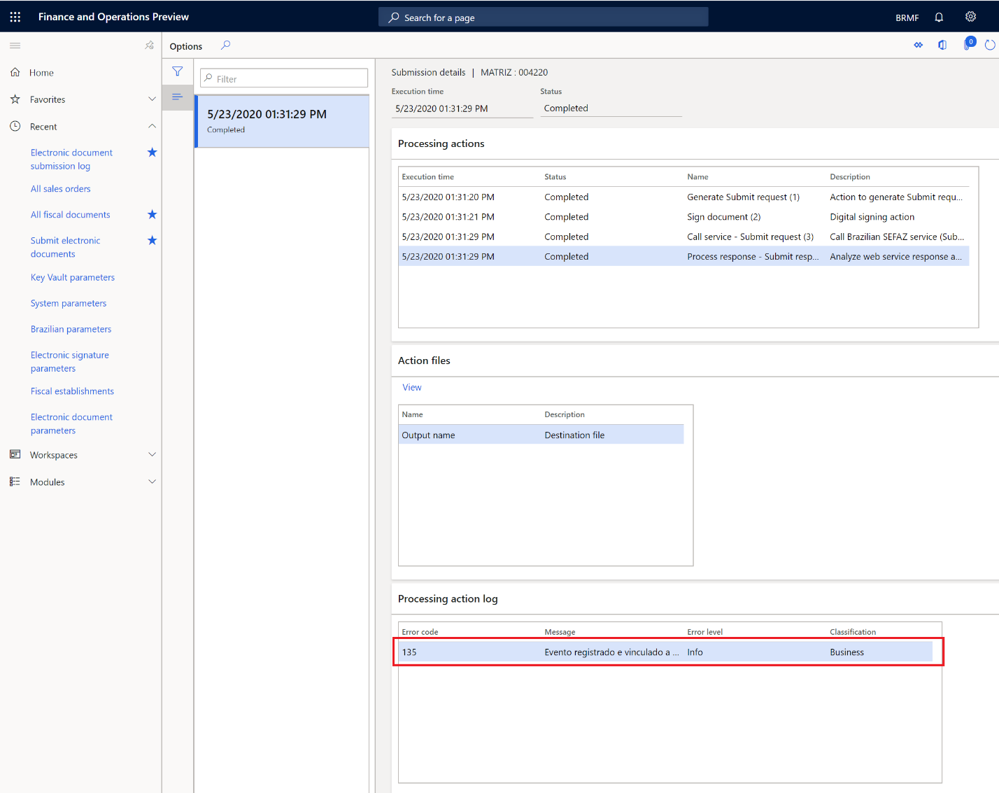
Datenschutzhinweis
Für die Aktivierung der Funktion „BR-00053 (NF-e)“ müssen möglicherweise nur begrenzte Daten gesendet werden, einschließlich der Steuerregistrierungskennung für die Organisation. Diese Daten werden an von der Steuerbehörde autorisierte Drittagenturen weitergeleitet, um elektronische Rechnungen in dem für die Integration in den Webdienst der Behörde erforderlichen Format an diese Steuerbehörde zu senden. Ein Administrator kann die Funktion „BR-00053 (NF-e)“ aktivieren und deaktivieren, indem er zu Organisationsverwaltung > Einrichtung > Parameter elektronischer Dokumente navigiert. Wählen Sie auf der Registerkarte Funktionen die Zeile mit der Funktion „BR-00053“ aus und treffen Sie die entsprechende Auswahl. Daten, die aus diesen externen Systemen in diesen Dynamics 365-Onlinedienst importiert werden, unterliegen unseren Datenschutzbestimmungen. Weitere Informationen finden Sie in den Abschnitten zum Datenschutz in der landesspezifischen Funktionsdokumentation.